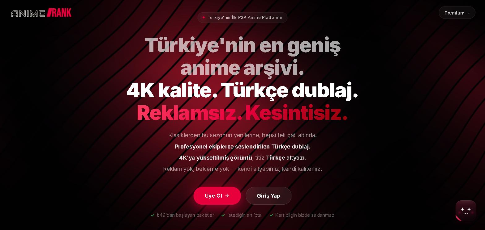

AnimeRank
A Turkish-first anime platform, founded under SYBERY.
Details
A searchable catalogue, a hybrid P2P and HLS player, cross-device watch progress and a community layer, on infrastructure we control end to end. Turkish is the canonical locale and English a full second one. I co-founded it and own the architecture, the backend and the delivery.
Behind it: a Node.js REST backend, a migration from SQLite to PostgreSQL with tuned queries, large-scale metadata collection and indexing, content-verification and media-matching engines, and a microservice-based service layer. Peer-to-peer hybrid distribution and AI-assisted media pipelines are in research and development.
49 Jest suites on the backend. Aim: take the platform global with Technopark support.
Node.js · PostgreSQL · MongoDB Atlas · HLS · ffmpeg